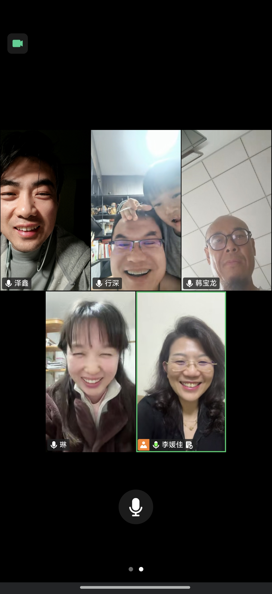

2026年11月27日 22时00分02秒

0349_001.jpg
http://blog.3place.cn/3place/bcsjen/hash/pic/0349_001.jpg
《悲惨世界》线上读书会完整详细纪要
一、会议基础信息
• 会议形式：线上交流
• 共读小组名称：破晓共读小组
• 核心研讨主线：以《悲惨世界》中文译名误读为切入点，剖析中国文化重整体意象、轻具体个体的深层文化特质；同步开展英文原著朗读、词汇赏析、跨文化对比、阅读感悟交流，并规划下一期读书会安排
• 主要参会人员：琳、韩宝龙、泽鑫、行深（Jason）、李媛佳（Maggie），袁佳缺席
• 会议整体流程：开场设备沟通→自我介绍与英文名探讨→作者与书籍背景分享→分段朗读实操→词汇与文本深度赏析→译名争议、文化差异深度研讨→个人阅读感悟分享→结课任务布置→下期书目与机制讨论→合影收尾
二、会议开场与基础规则确定
三、全员自我介绍与英文名文化探讨
四、作者背景、书籍概况与朗读环节
• Challenge assumptions：琳分享该词组，含义为“挑战成见”；泽鑫、行深一同跟读纠正发音，共同探讨词义，互动氛围融洽。
五、译名争议、文化差异与文本深度研讨（会议核心部分）
• 韩宝龙梳理英文版导言内容：作者Robert Thomas不从法国大革命角度解读本书，而是将其定位为两次大革命之间的动荡历史；总结雨果对共和制未能达到预期的反思。Thomas提出书中角色现实里不存在，却又真实存在，体现文学作品对真实历史的艺术化折射；同时评价本书将哲学、历史与政治浓缩为诗，并为该英译本背书，确认译本忠于原著。
• 翻译突破：出版社与译者打破惯例，没有保留法语原意，将书名译为“Rich”，是对传统翻译惯例的主动冲击。
• 文本细节解读：书中“苦役船”的残酷程度远超普通监狱；过去容易把冉阿让越狱理解为调皮捣蛋，结合历史语境才能理解其逃离的合理性，历史语境缺失会造成人物动机误读。
• 译者Christine的翻译策略：刻意保留法国文化底色，区别于维多利亚式纯英译；把宏大时代控诉具象为个体命运；雨果借助语言阶层划分映射阶级壁垒，译者使用生僻英语还原沟通隔阂，用“读不懂”还原阶级壁垒；全书四大文体中讨论部分占比最大，是全书核心，遇到晦涩方言可以直接跳过。
六、成员感悟分享、教学闭环与结课任务
七、下期读书会规划讨论
• 李媛佳提议《动物庄园》或《哈利波特》，愿意服从多数人选择；
• 琳提出选书需要兼顾文学性与历史综合性；
团队诉求出现分化，后续需要在文学性和易读性之间权衡。 3. 学习形式优化 泽鑫建议下一期准备中英双语材料，先阅读英文原文，再阅读中文辅助理解，为基础薄弱的成员兜底，降低跟读门槛。确定任务认领、领航人轮换机制。
八、会议收尾
琳宣布首期破晓共读读书会圆满结束。众人配合开启摄像头合影留念，行深幽默调侃自己刚刚脱掉上衣，大家互相道别，氛围轻松融洽。
如果你需要，我还可以把这份完整纪要精简成正式Word文档格式版本，或者提炼一份用于群内直接转发的简版总结。
Meeting Minutes — Dawn Reading Group (Session 1)
Book: Les Misérables by Victor Hugo
Date: [Insert date]
Format: Online video meeting
Attendees: Lin, Han Baolong, Ze Xin, Xing Shen (Jason), Li Yuanjia
(Maggie)
Absent: Yuan Jia
Minutes prepared by: Yuanbao
The first session of the Dawn Reading Group was held online. The main goals were to:
• Build familiarity among members;
• Begin reading Les Misérables in English;
• Discuss the well-known Chinese translation issue surrounding the title;
• Explore the cultural assumptions behind that translation;
• Agree on a workable format for future sessions.
Lin proposed turning on cameras, but Han Baolong declined because he was not alone at home and was dressed casually. Xing Shen joined after parking his car, and Lin also chose to keep her camera off due to casual clothing. The group therefore proceeded without video.
Because Yuan Jia could not be reached and the scheduled time had passed, Lin decided to begin the meeting and handed the main facilitation role to Ze Xin.
Ze Xin had originally considered an all-English session, and Li Yuanjia supported the idea. Han Baolong, however, was strongly opposed because he felt his spoken English was too rusty. Lin proposed a bilingual approach: use English where possible, but allow Chinese to support deeper expression and reduce anxiety.
The group agreed on the following rule:
Start in English; switch to Chinese when stuck.
Ze Xin outlined a 90-minute agenda, but Lin suggested limiting the first session to about one hour. The group agreed to remain flexible and prioritise a comfortable experience over strict adherence to the original plan.
Each member introduced themselves and shared, or discussed, an English name.
• Ze Xin introduced himself in a mixture of Chinese and English. He admitted that reading the novel alone was difficult and said he was looking for reading partners. His honesty set a relaxed and supportive tone.
• Han Baolong said he did not have an English name and asked the group for suggestions. He described Les Misérables as a demanding read and said his main goal was to improve his English listening and speaking.
• Xing Shen (Jason) said he had not used English for a long time. He was somewhat surprised by the interactive format but hoped regular meetings would improve his spoken English.
• Li Yuanjia (Maggie) said she loved English because of her family background. She emphasised a “thick-skinned” approach: do not be afraid of mistakes; just speak. She explained that her English name came from her fondness for The Golden Pheasant.
• Lin formally named the group the Dawn Reading Group. She said she hoped the group would go beyond spoken English practice and also develop literary appreciation.
A brief cultural discussion arose around the name “Dragon.” Ze Xin and Lin explained that “Dragon” often carries negative connotations in Western contexts. Lin suggested “Han” based on Han Baolong’s Chinese name, which preserved the sound while avoiding the cultural mismatch.
Ze Xin introduced Victor Hugo. Lin and Xing Shen corrected some of his French pronunciation. Han Baolong added important historical context: Hugo was exiled after a political coup and wrote Les Misérables during that exile. Ze Xin mentioned that Hugo built a glass writing room on Guernsey and that the novel runs to roughly 1,500 pages.
The group confirmed that Li Yuanjia had read the Chinese version. Lin suggested moving away from extended Chinese background discussion and returning to the English reading itself.
The group agreed that each person would read one paragraph.
• Han Baolong read first.
• Li Yuanjia read next. She stumbled over the French word “lebane,” and Lin corrected the pronunciation.
• Xing Shen then continued.
After the reading, the group moved to vocabulary analysis.
• “Lebanon” / “le bagne”: Ze Xin explained that this referred to the military-run institution where convicts served, and that conditions there were extremely harsh.
• “Challenge assumptions”: Lin introduced this phrase. Ze Xin and Xing Shen practised the pronunciation and discussed its meaning as “to question accepted ideas.”
6.1 The Translation Problem
Han Baolong presented the central observation of the session: the Chinese title 《悲惨世界》 is arguably a mistranslation. In his view, Hugo was condemning “wretched people” rather than describing a “wretched world.”
6.2 Cultural Roots
Han argued that this mistranslation reflects a deeper cultural tendency:
• Chinese culture has often paid less attention to specific individuals and concrete details;
• It has tended to prioritise holistic imagery and broad conceptual categories;
• This produces a collective-oriented reading rather than an individual-oriented one.
He illustrated the contrast with Saving Private Ryan and the Chinese news story “For 61 Class Brothers,” arguing that these examples reveal different assumptions about the value of the individual. Lin added that many classic literary works are shaped by biblical culture, and Han agreed.
6.3 Historical and Translation Context
Lin and Ze Xin discussed the historical status of languages: French was once the mainstream literary language, while English was sometimes regarded as secondary. They suggested that this made the English title controversial and possibly “clickbait-like.”
Han Baolong summarised the English edition’s introduction by Robert Thomas. Key points included:
• Thomas frames the novel as a history of turbulence between two revolutions, rather than simply as a story about the French Revolution;
• Hugo reflected on the failure of the republic to meet expectations;
• The characters did not exist in reality, yet they feel real — literature refracts history through artistic means;
• Thomas describes the novel as condensing philosophy, history, and politics into poetry;
• Thomas endorses the English translation as faithful to the original.
Han also noted that the publisher and translator broke with convention by rendering the French title in a way that did not preserve the literal meaning — an active challenge to traditional translation practice.
6.4 Textual Details and Translator Strategy
Further points raised during the discussion:
• The galleys in the novel were far more brutal than ordinary prisons. Without historical context, Jean Valjean’s escape can be misread as mere mischief; with context, his motivation becomes understandable.
• The translator Christine deliberately retained French cultural colouring, distinguishing the translation from a purely Victorian English style.
• Hugo used language differences to reflect class barriers. Christine reproduced this communicative gap by using obscure English, so that the reader’s difficulty in understanding mirrors the class divide.
• The novel contains four major stylistic modes. The discursive sections are the largest and most central. Han suggested that readers may skip obscure dialect passages without losing the main thread.
6.5 Key Idea
Ze Xin drew out a broader principle: “Language is thinking.” Reading across languages, he suggested, opens up new ways of seeing.
• Li Yuanjia gave an English summary of Jean Valjean’s theft of bread and the bishop’s redemption. She stumbled at times but completed the task. She compared the novel with Chinese history and argued that Javert’s obsession shows the universality of human nature. She also shared her experience of tackling the English edition by working through unfamiliar vocabulary. The group joked that early translations sometimes “smuggled in” the translator’s revolutionary ideals or “rode the trend.”
• Xing Shen overcame his hesitation and read an English passage about the title translation. Ze Xin then led a slower, more expressive group reading. Han Baolong and Li Yuanjia read fluently; Xing Shen stumbled; Lin paused midway, and Ze Xin guided her to continue.
Ze Xin assigned a closing task: find a practical application of the book’s content in everyday life. He used the translator’s “attention-grabbing” strategy as an example, comparing it to short-video marketing — breaking convention in order to attract attention.
Lin proposed adding a rotating “Digger” role. The Digger would be responsible for uncovering new viewpoints not already raised, so that discussions do not become repetitive. Xing Shen reflected that he had not prepared enough and promised to prepare better next time.
8.1 Pain Points
Members generally agreed that Les Misérables was too difficult and that positive feedback had been limited. There was consensus that a change of book would help lower the barrier.
8.2 Book Options
• Han Baolong recommended Animal Farm, which is only about 3,000 words.
• Li Yuanjia suggested Animal Farm or Harry Potter, but said she would follow the majority.
• Lin asked that the choice balance literary quality with historical breadth.
The group’s preferences diverged between literary depth and readability. No final decision was recorded in the minutes.
8.3 Format Improvement
Ze Xin suggested preparing bilingual Chinese–English materials for the next session: read the English first, then consult the Chinese for support. This would help less confident members follow along.
8.4 Roles and Close
Tasks and rotating roles were assigned. Lin declared the first session of the Dawn Reading Group complete. Members turned on cameras for a group photo. Xing Shen joked that he had just taken off his shirt, and the group ended on a warm and informal note.
Item Decision / Action Owner
Language rule Start in English; switch to Chinese when stuck All members
Session length Keep the first sessions flexible, around one hour Lin / Ze Xin
Reading format Each member reads one paragraph All members
Vocabulary focus Continue selecting key words and phrases for discussion Ze Xin
Closing task Find a real-life application of the book’s content All members
New role Add a rotating “Digger” to introduce fresh viewpoints Lin
Next materials Prepare bilingual Chinese–English materials Ze Xin
Next book Decide between Animal Farm and other options, balancing readability and literary value All members
Preparation Read the assigned section and check key vocabulary before the meeting All members
The first session of the Dawn Reading Group successfully combined English reading practice with a substantive discussion of translation, culture, and literary interpretation. The group established a supportive bilingual format, identified the difficulty level of Les Misérables as a concern, and began planning a more accessible next session. The “Digger” role and bilingual materials were the main structural innovations proposed for future meetings.
Note: This document is an original English meeting record, not a line-by-line translation of the Chinese minutes.
以下是针对每位参会成员的点评与建议，基于会议中的实际表现：
琳
点评：琳展现了出色的组织能力和领导力。她果断推动会议进程，在联系不上袁佳时及时拍板开始，避免了冷场。她情商很高，为韩宝龙取名“Han”时巧妙避开“Dragon”的文化陷阱，体现了跨文化敏感度。她还主动将读书会定位从口语练习提升到文学鉴赏，并提议设立“挖掘者”轮值角色，有很强的机制创新意识。
建议：琳在讨论中发言较多，有时会主导话题方向。未来可以有意识地留出更多沉默空间，鼓励其他成员先表达，尤其是行深这样相对内向的成员。此外，她在朗读环节中途停顿，可以提前多熟悉文本，进一步提升示范作用。
韩宝龙
点评：韩宝龙是本次会议的知识核心。他深度剖析了《悲惨世界》译名误读及其背后的中国文化根源，引用《拯救大兵瑞恩》《为61个阶级兄弟》等案例进行东西方对比，逻辑清晰、视野开阔。他对英译本背景、译者策略、历史语境的梳理非常详尽，极大丰富了讨论的厚度。同时他坦诚自己口语弱、没有英文名，这种真诚降低了团队的参与门槛。
建议：韩宝龙的分享时长较长（如8分钟梳理英文版背景），虽然内容精彩，但压缩了其他人的发言时间。未来可以尝试将长分享拆分为几个短段落，穿插提问或互动，让讨论更有节奏感。另外，他在朗读环节表现流畅，可以主动承担领读或示范角色，带动大家。
泽鑫
点评：泽鑫承担了主持人和教学引导的双重角色。他设计了“首句英语、卡壳转中文”的规则，组织了朗读、词汇赏析、结课任务等环节，流程把控较为顺畅。他善于提炼观点（如“语言即思维”），并用短视频营销等通俗类比帮助理解。他还积极纠正发音、鼓励大家放慢语速，营造了安全的练习氛围。
建议：泽鑫在词汇赏析和背景介绍环节花费时间较多，导致后半程稍显仓促。建议提前规划每个环节的时间上限，并设置计时提醒。此外，他在朗读环节直接打断琳并要求她继续读，虽然出于教学目的，但语气可以更温和，例如先给予肯定再引导。
行深（Jason）
点评：行深虽然多年未用英语，但勇于参与，完成了自我介绍的英文表达和段落朗读。他在朗读中出现卡壳和重复，但没有退缩，展现了良好的学习态度。他事后主动反思并承诺下次充分准备，说明有较强的自我驱动力。
建议：行深在讨论中发言较少，更多是被动回应。建议他下次会议前至少通读一遍指定段落，标注生词并练习发音，这样可以减少朗读时的紧张感。另外，可以尝试在自由分享环节主动提出一个简单的问题或感受，哪怕只有一两句话，也能更快融入讨论。
李媛佳（Maggie）
点评：李媛佳热情开朗，秉持“不怕犯错、敢于开口”的态度，是团队中的正能量来源。她用英文概括了冉阿让的故事主线，虽然有些磕绊但坚持完成，起到了很好的表率作用。她还将书中情节与中国历史类比，并提出关于原著语言的疑问，有效激发了讨论。她对换书的建议也很务实（《动物庄园》《哈利波特》）。
建议：李媛佳的分享有时跳跃性较强，逻辑线索不够清晰。建议她在发言前列一个简单的提纲（比如用关键词），使表达更连贯。此外，她的英文发音在个别单词上仍有偏差（如被韩宝龙和泽鑫纠正过几次），可以在家多听原版音频跟读，巩固基本功。
总体建议（适用于全组）
• 下次会议可提前发放双语材料，让大家有充分的预习时间。
• 设立时间官角色，确保各环节按时推进。
• 鼓励每位成员轮流担任“挖掘者”，拓展讨论维度。
如果需要我将这些点评整理成表格或正式文档，请告诉我。